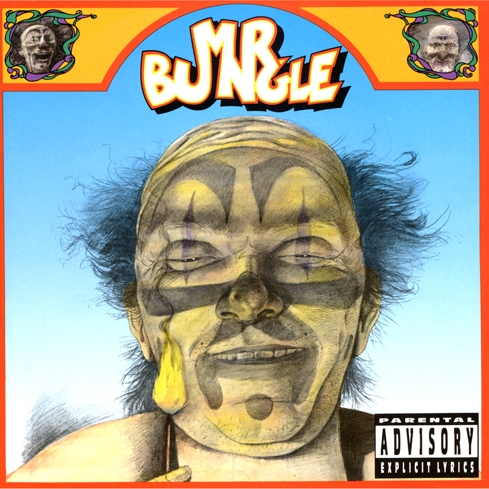
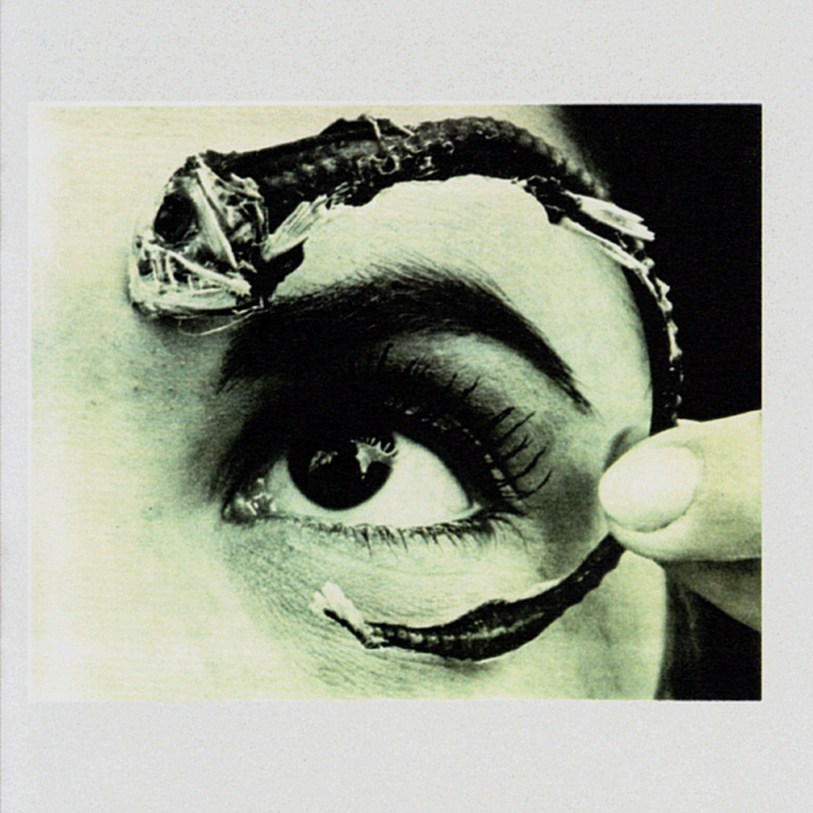

Mr. Bungle
Mr. Bungle is an American experimental rock band from Northern California. Known for a highly eclectic style, the band often cycled through several musical genres within the course of a single song, including heavy metal, avant-garde jazz, ska, disco, and funk. Many Mr. Bungle songs had an unconventional structure and utilized a wide array of instruments and samples. Live shows often featured members dressing up (even hiding their identities with masks and often jumpsuits earlier in the band's career) and an array of cover songs.
To know more about this awesome band, click here.
Studio Albums
1991
Mr. Bungle
Track listing:
- Travolta (6:56)
- Slowly Growing Deaf (Sleep Part I) (6:58)
- Squeeze Me Macaroni (5:58)
- Carousel (5:13)
- Egg (10:39)
- Stubb (A Dub) (7:19)
- My Ass Is on Fire (7:47)
- The Girls of Porn (6:42)
- Love Is a Fist (6:00)
- Dead Goon (10:02)
1995
Disco Volante
Track listing:
- Everyone I Went to High School With Is Dead (2:45)
- Chemical Marriage (3:09)
- Sleep (Part II): Carry Stress in the Jaw (3:09)
- Desert Search for Techno Allah (3:09)
- Violenza Domestica (3:09)
- After School Special (3:09)
- Sleep (Part III): Phlegmatics (3:09)
- Ma Meeshka Mow Skwoz (3:09)
- The Bends (3:09)
- Backstrokin (3:09)
- Platypus (3:09)
- Merry Go Bye Bye (3:09)